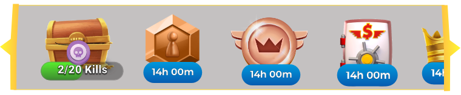

Product Design Role
What is Product designer actually do?
After having a long journey of working as a UI/UX Designer for more than five years, I got an opportunity to work as a Product Designer. I always thought Product Designer is almost the same as UI/UX Designer. I very recently learnt I am partially right. Though as a Product Designer you apply the same design principles, you set up a process for every task – there are more number of hats that you get to wear. You also work in building the entire product from designing screens to working on banners to working on Ads for marketing. Its a full stack experience and looking at the data at end of the day is the fun part in all of this!
UX/UI Design

To make these decisions of placement of icons there was a set of questions that ad to be addressed.
1. How many icons are present on the screen?
2. Is it necessary to display all of these icons on the home screen?
3. Can we group the icons and display them at different places or do we group the icons and place it under one single icon (like how we place icons in more or menu)?
4. Can the icons be removed after it has served its purpose?
5. Are all icon representation clear? Or do we need to add text under each icon?
6. Can the icons be scrollable?
To answer and analyze these questions thoroughly, I started with research and started filtering what is best for our application. In the end, I concluded that grouping te icons and making them scrollable is the best approach.

With making scrollable, I wanted to show the new icons in the start or being visible so that our users can explore the new features added, and in terms of interaction, I wanted the icons to scroll from last to start on a daily basis to remind
the users of other icons that are already existing. I also displayed the number of icons that are inside.
I did not want the aspect of the icons disappearing after it has been seen as Toon Blast does as I wanted the users to keenly wait for the next reward.
Not all icons were able to convey their entire meaning, but I was fine with it as I wanted the users to explore what the icon meant. At the same time, I saw that text was added to icons if it was very vague.
In conclusion, icons play a crucial role in the game. Having them properly and accessible placed is te most ard and crucial part!
I finally came up with this output after the research.
